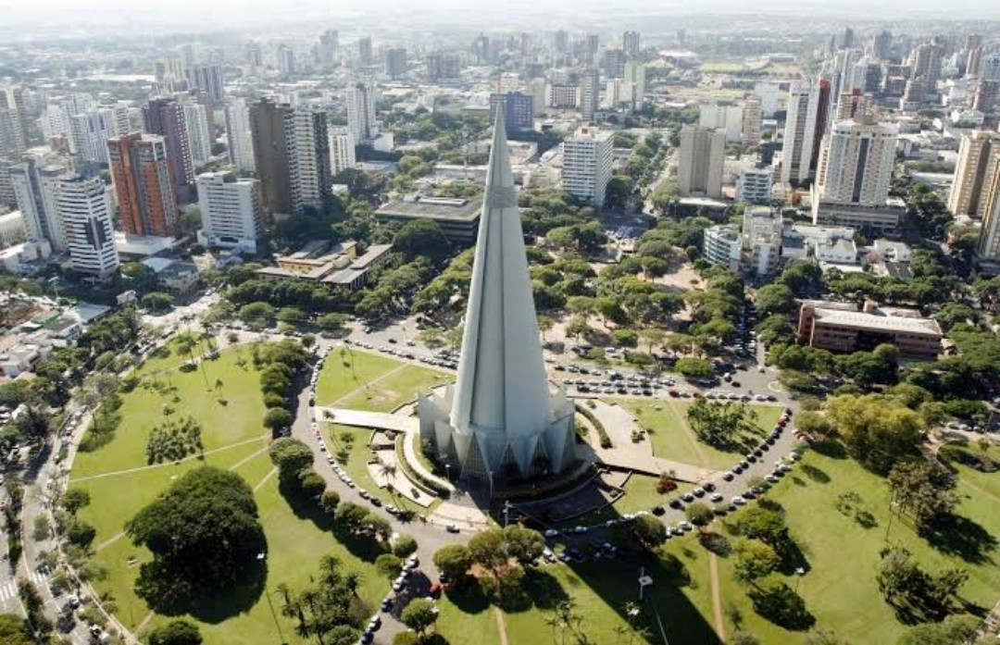

de Maringá
de MaringáÚltimas notícias sobre o Coronavírus no Brasil e no mundo
-
Brasil tem registro de 618 mortes e 27.804 novos casos diagnosticados em 24 horas
De acordo com o Ministério da Saúde, o país registrou nesta segunda(28) 618 mortes por Covid-19 e 27.804 novos casos diagnosticados...
Clique para acessar a matéria completa
-

Nos EUA, cientistas de Harvard e MIT criam máscara capaz de detectar o Covid-19
Com tecnologia precisa, a máscara pode detectar o vírus SARS-CoV-2. O resultado sai em 90 minutos após o acionamento de um botão...
Clique para acessar a matéria completa
-

Segundo estudos, 3ª dose da AstraZeneca aumenta resposta imunológica
De acordo com estudos divulgados pela Universidade de Oxford, uma terceira dose da vacina AstraZeneca pode aumentar a resposta imune...
Clique para acessar a matéria completa
Últimas notícias sobre o Coronavírus em Maringá
-

Prefeitura da cidade de Maringá decide prorrogar restrições até 5 de julho
O decreto foi publicado nesta manhã de segunda-feira(28). Ela mantém o toque de recolher e determina o fechamento de atividades aos domingos...
Clique para acessar a matéria completa
-

Cidade de Maringá apresenta alto número de casos e mortes por Covid-19
Entre os dias 21 e 27 de junho, foi registrado um aumento de 13% no número de óbitos comparado à semana passada...
Clique para acessar a matéria completa
-

Fiscalização em Maringá autua 63 pessoas por descumprirem as medidas restritivas
57 pessoas foram multadas em mil reais por descumprirem a medida do toque de recolher, as notificações foram encaminhadas ao...
Clique para acessar a matéria completa